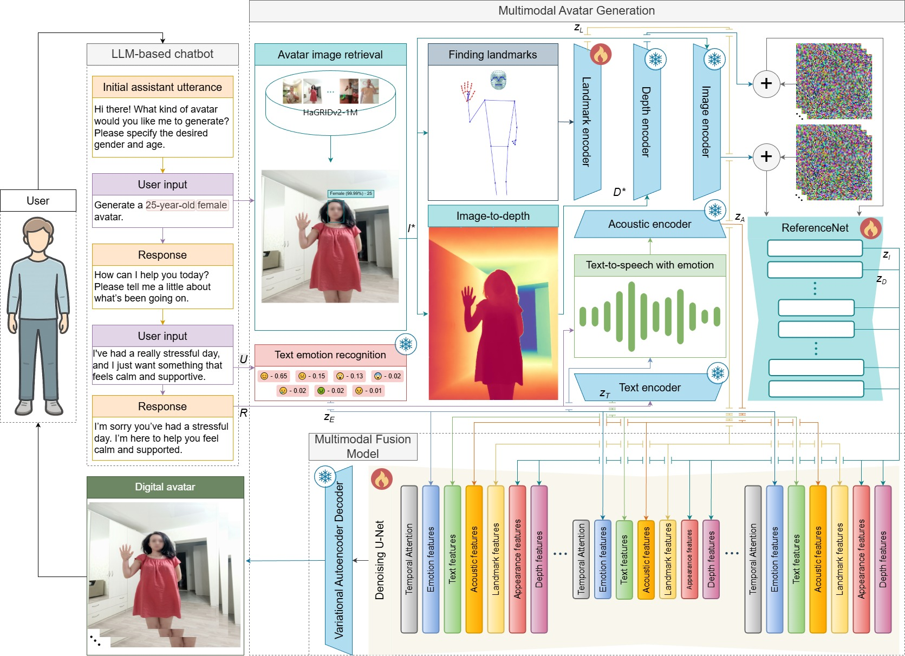

Digital-avatar systems still provide limited control over emotionally expressive behavior in human-computer interaction, especially in LLM-based chatbots and virtual assistants with personalized visual embodiments. To address this problem, we propose MAVAGEN, a multimodal avatar generation framework for synthesizing upper-body digital avatars with personalized appearance and controllable emotional expression. The user specifies the desired gender and age, and provides a short text input from which the target emotional state is inferred. MAVAGEN retrieves an identity image from the HaGRIDv2-1M corpus and generates an avatar clip with synchronized facial expressions, hand gestures, and expressive speech.
The framework uses six feature streams: textual features, emotion-distribution features, landmark-based pose features, depth-geometry features, RGB-appearance features, and acoustic features. In quantitative evaluation against recent human animation methods, MAVAGEN achieves the best overall avatar quality, with FID 48.20, FVD 592.00, SSIM 0.741, Sync-C 7.40, HKC 0.929, HKV 25.30, CSIM 0.563, and EmoAcc 0.88.
Avatar identity is conditioned on requested gender and age attributes.
Text-derived emotional state guides speech, facial motion, and gestures.
Text, emotion, pose, depth, RGB appearance, and acoustic streams are fused in one generation pipeline.
MAVAGEN consists of an LLM-based chatbot and an avatar generation module. The assistant collects avatar attributes, estimates the target emotion from the user message, retrieves a matching identity image, extracts landmark and depth representations, generates expressive speech, and passes aligned multimodal embeddings into a diffusion-based generator.

Pipeline of the proposed MAVAGEN framework.
Qualitative comparison between MAVAGEN and EchoMimicV2.
Personalized upper-body avatar generation with explicit emotion and acoustic conditioning.
Reference system for visual and audio-visual comparison.
Lower FID, FVD, E-FID, and Sync-D are better. Higher SSIM, PSNR, Sync-C, HKC, HKV, CSIM, and EmoAcc are better.
48.20
Frame realism
592.00
Temporal coherence
7.40
Audio-visual synchrony
0.88
Target emotion agreement
| Method | FID ↓ | FVD ↓ | SSIM ↑ | PSNR ↑ | E-FID ↓ | Sync-D ↓ | Sync-C ↑ | HKC ↑ | HKV ↑ | CSIM ↑ | EmoAcc ↑ |
|---|---|---|---|---|---|---|---|---|---|---|---|
| EchoMimicV2 | 50.10 | 605.30 | 0.736 | 21.90 | 2.240 | 7.10 | 7.150 | 0.921 | 25.20 | 0.555 | -- |
| MAVAGEN | 48.20 | 592.00 | 0.741 | 21.95 | 2.250 | 6.85 | 7.40 | 0.929 | 25.30 | 0.563 | 0.88 |
Compared with EchoMimicV2, MAVAGEN improves frame and sequence quality, slightly improves audio-visual synchrony and motion consistency, and introduces EmoAcc as an auxiliary task-specific measure of emotional agreement.
@article{axyonov2026mavagen,
title={MAVAGEN: Multimodal Avatar Generation Framework for Personalized Human-Computer Interaction},
author={Axyonov, Alexandr and Ryumina, Elena and Ryumin, Dmitry and Karpov, Alexey},
year={2026}
}